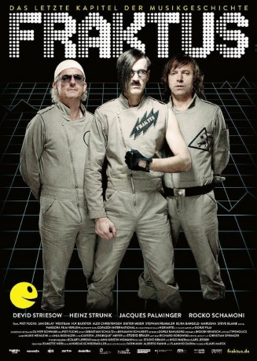

#11046 Fraktus
 
 IMDB-Wertung: 7.1 / 10
IMDB-Wertung: 7.1 / 10  Metascore: 0
Metascore: 0 
Fraktus ist eine deutsche Mockumentary über die Geschichte der gleichnamigen Technoband . Einst galten Fraktus als die Pioniere des Techno. Nun, nach 25 Jahren, planen sie ihr großes Comeback. Unterstützung erhält die Band dabei von ihrem Manager Roger Dettner der die Band mit einem Trick wieder zusammenbrachte.
Jahr: 2012
Dauer: 95 Minuten
FSK: 12
Land: Deutschland Studio: Pandora Film VerleihTonspuren:
Untertitel:
Auflösung: 1080p (1920x1032) Größe: 6717 MB
Genre: Musik, Komödie
Regisseur: Lars Jessen, Jacques Palminger, Rocko Schamoni, Sebastian Schultz, Heinz Strunk
Drehbuch: Heinz Strunk, Rocko Schamoni, Jacques Palminger, Sebastian Schultz, Lars Jessen
Soundtrack: Carsten Meyer
Darsteller:
 Devid Striesow als Roger Dettner
Devid Striesow als Roger Dettner Piet Fuchs als Winnie
Piet Fuchs als Winnie- Blixa Bargeld als Himself
- Marusha als Herself
- Anvil als Themselves
- Jasmin Wagner als (uncredited)
- Heinz Strunk als Torsten Bage
- Rocko Schamoni als Dickie Schubert
- Jacques Palminger als Bernd Wand
- Alex Christensen als Himself
- H.P. Baxxter als Himself
- Dieter Meier als Himself
- Jan Delay als Himself
- Stephan Remmler als Himself
- Matthias Schuster als Himself
- Jürgen Laarmann als Himself
- Steve Blame als Himself
- Peter Illmann als Himself
- Peter Urban als Himself
- Hans Nieswandt als Himself
- Westbam als Himself
- Jan Köppen als Himself
- Helmut Geier als Himself
- Porky als Himself
- Yasmin Allain als Herself
- Willi Herren als Himself
- Julia-Niharika Sen als Herself
- Marcus Engelhardt als Dickie Schubert 1983
- Kenny-David Baehr als Bernd Wand 1983
- Rafael Weitzel als Torsten Bage 1983
- Manuel Helbling als Dieter-Miguel
- Margit Laue als Mutter Wand
- Wolfgang Nissen als Vater Wand
 Anna Bederke als Sabine 'Lutschi' Dettner
Anna Bederke als Sabine 'Lutschi' Dettner- Hannes Hellmann als Achim Gundel
- Felix Goeser als Thomas 'Tissi' Tiemeyer
- Katrin Pollitt als Annette Spremmberg
- Jürgen Rißmann als Roland Spremmberg
- Komi Togbonou als Senegalesischer Geldbote
- Pari Chopan als Tänzerin
- Vanessa Kicker als Tänzerin
- Renick Bernadina als Choreograph
- Walter Löwenberg als Sicherheitsdienst Notalarm
- Lotta Fuchs als Pupslied-Mädchen
- Fred Fuchs als Vater Pupslied-Mädchen
- Lydia Ahrens als Barfrau Abraxis-Studio
- Klaus Maeck als Kunde Optiker Wand
- Philipp Hartmann als (uncredited)
- Jan Peter Heyne als (uncredited)
- Julia Westlake als (uncredited)
Datei: X:\2012(A-F)\Fraktus (2012, FSK12, 1920x1032).mkv seit 24.04.2019
Festplatte: HD 2012(A-M)
 Es gibt insgesamt 102 Filme in der Gruppe '2012(A-F)'
Es gibt insgesamt 102 Filme in der Gruppe '2012(A-F)'